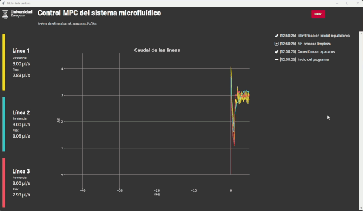
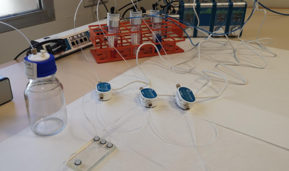
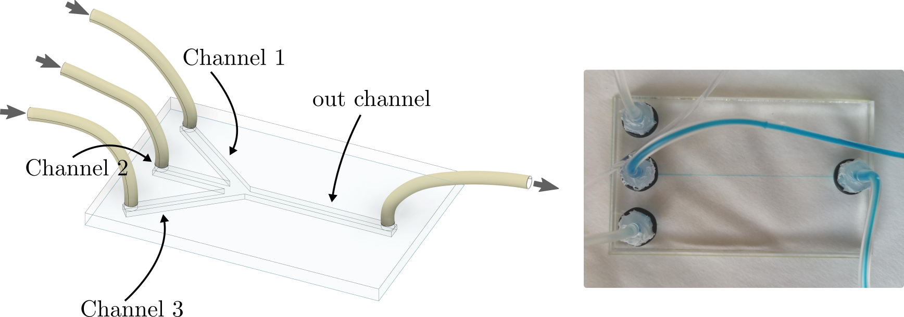
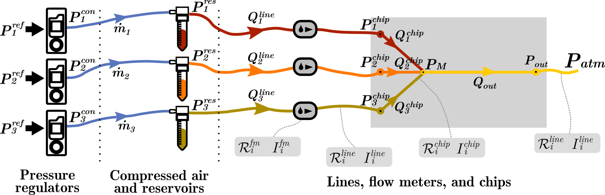

This work was awarded the ISA Spain Section Student Paper Award 2025 in the University Category.
Microfluidics, a discipline that studies the behavior of fluids in microscopic channels, has led to important advances in fields as diverse as microelectronics, biotechnology and chemistry. Microfluidic research is mainly based on the use of microfluidic chips, low-cost devices that can be used to perform laboratory experiments using small amounts of fluid. These systems, however, require advanced control mechanisms in order to accurately achieve the flow rates and pressures required in the experiments. In the first part of this work, we present the design of a model predictive controller (MPC) intended to regulate the fluid flows in one of these systems. The results obtained, both through simulations and real experiments performed on the device, demonstrate that predictive control is an ideal technique to control these systems, especially taking into account all the existing constraints.
The versatility of these systems means that changes, such as the use of different fluids, must be detected and modelled to provide accurate control of pressures and flow rates. For that reason, in the second part of this work we propose the estimation of the parameters that model the most important parts of the system, in order to adapt the existing MPC to changes during the tests. We have analysed the application of different offline and online parametric identification techniques. The simulations carried out with real data have allowed to evaluate the behaviour with the different methods and to select the most suitable one. In the fluid dynamics, the estimation was based on the physical parameters of the system. It has been demonstrated that the system is structurally identifiable and a method for this has been proposed. Finally, a method has been proposed to mitigate the negative effects of system noise on the identification, obtaining good simulation results. This method has been implemented in Python and tested on the real system. The results show that the parametric estimation is able to identify the changes in the system to update the model used by the controller.
The chip used simulates the mixing of three fluids to achieve a specific flow profile at the outlet. To do this, it consists of three inlet channels that converge at an intermediate point to form a single outlet channel. The main challenge in this type of system is to precisely control the pressures applied to the fluid reservoirs, which result in different fluid flow rates through the channels. Depending on the flow rate of each fluid and the internal intermediate pressures within the system, different fluid profiles are achieved at the output.

In addition to the chip, our system consists of pressure regulators, which are used to control the pressure in the fluid reservoirs. The fluid, whose properties may initially be unknown or subject to uncertainty, flows through various lines and channels that also have hydraulic resistance and inertia with uncertainty. One of the challenges of the system is to detect and continue to maintain proper control of the flows in the system even when these properties—of both the lines and the fluid—change during a test.

The main challenge of this system is controlling flow rates within the chip using limited measurements taken at locations other than where control is desired. To address this, the system was modeled, and an MPC controller was employed to successfully control the system. In normal operation of such systems, the physical conditions and the fluid used are variable; therefore, the next challenge was to make this MPC adaptive. After analyzing the system’s identifiability and identifying the most influential system parameters, various online estimation techniques were analyzed and implemented, both through simulation and in the laboratory. Finally, changes in the parameters were successfully detected, and the controller was updated accordingly. However, it was found that measurement noise in the real system significantly affects this identification, and future work will focus on improving the noise-affected estimation.
This work has been developed in collaboration with the Instituto Tecnológico de Aragón (ITA) .